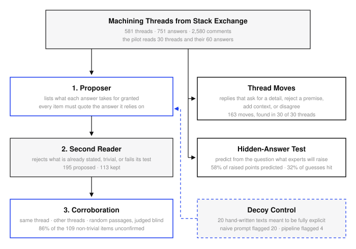

Tacit Knowledge Capture

Context
Much of what makes a part easy or hard to manufacture is never written down. It lives in the judgment of experienced machinists, and when it does surface, it tends to surface in conversation, in a reply that asks for a missing detail, corrects an assumption, or adds a condition the original question left out. This is my Master of Engineering capstone at Berkeley, a year-long project built by a team of three with a mechanical engineering design lab, and it asks how naturally occurring and messy data can be used to capture that kind of tacit knowledge for better design feedback.
The project runs until May 2027, so what follows is work in progress. The team split the work into three lanes, manufacturing applications, synthesis, and tacit knowledge, and mine is the last. Below I've split it into two parts: first how I framed the problem, and then the pilot I designed to test that framing and what it showed.
Part 1: Framing the Problem
I started with a literature review across five strands of research on how meaning that is implied rather than stated can be recovered from text, carried out with AI research tools and written up with a section on what the review could not verify. Its most useful finding was a warning: language models tend to over-detect hidden meaning, i.e., they find implications that are not there, hence any method built on them has to generate candidates first and then verify them rather than trust what it proposes.
The framing that came out of it is that tacit knowledge in a forum thread shows up as a relation between turns. When an expert's reply asks for a detail, rejects a premise, or adds a condition, it reveals what the earlier post left unsaid, and that relation can be checked against the rest of the thread instead of being taken on the model's word.
In parallel, I tested whether the lab's existing knowledge graph of manufacturing knowledge could supply what a design checker needs. In a single review pass, 106 of 776 candidate entries pulled through its demo interface were strong matches, which makes the graph useful for explaining problems and suggesting fixes for about six or seven of the project's twelve design rules, but not as a source of the numeric limits a checker would need.
Part 2: The Pilot
To test the framing, I designed a pilot and built its pipeline in Python with the help of an AI coding assistant. It collects machining threads from Stack Exchange, 581 of them with 751 answers and 2,580 comments, and runs a language model through seven stages on a sample of 30 threads. One stage lists what each answer takes for granted, quoting the text each item relies on; a second reader rejects anything already stated, trivial, or failing its test; and a later stage looks for each surviving item in the same thread, in other threads, and in random passages, with the judge not knowing which is which. The pipeline runs in batches with caching and a budget cap, and the full pilot cost $2.09 to run.
The safeguards turned out to matter most. On 20 hand-written decoy texts meant to be fully explicit, a naive prompt that simply asked what tacit knowledge was implied flagged all 20, at almost eight items each, while the constrained pipeline flagged 4. On review, each of those 4 was a real unstated condition, which means the decoys were not as explicit as intended and need a redesign, but the difference between the two approaches is still large.
Of 195 proposed items, the second reader kept 113, and the harder result came next: 86% of the non-trivial ones could not be confirmed anywhere in the thread or the corpus. The search matches words rather than meaning, so that figure is an upper bound, but it still suggests that most of what the model proposes stays a plausible guess rather than knowledge. The relation between turns, on the other hand, was everywhere: the model found 163 replies that added context, asked for clarification, rejected a premise, or disagreed, in all 30 threads.
The pilot is small, and one model family did both the proposing and the judging, so I read it as a direction rather than a result. What I take from it is that proposing tacit knowledge is easy and confirming it is the hard part, and I believe that is where the rest of the project has to put its effort.